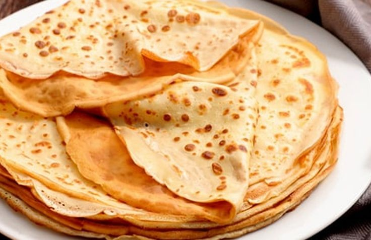

Deliciosos panqueques caseros
Ingredientes:
- 1 taza de harina
- 1 taza de leche
- 1 huevo
- 1 cucharada de azúcar
- 1 pizca de sal
- 1 cucharada de manteca derretida
Pasos para preparar los panqueques:
- En un bol, mezcla la harina, el azúcar y la sal.
- Agrega el huevo y mezcla bien.
- Poco a poco, incorpora la leche mientras sigues batiendo.
- Agrega la manteca derretida y mezcla hasta obtener una masa homogénea.
- Calienta una sartén antiadherente a fuego medio y engrásala ligeramente.
- Vierte una porción de la mezcla en la sartén, extendiéndola para que quede delgada.
- Cocina hasta que los bordes comiencen a dorarse, luego voltea el panqueque y cocina por el otro lado.
- Repite con el resto de la mezcla.
- Sirve los panqueques con el acompañamiento de tu preferencia: miel, frutas, dulce de leche, etc.